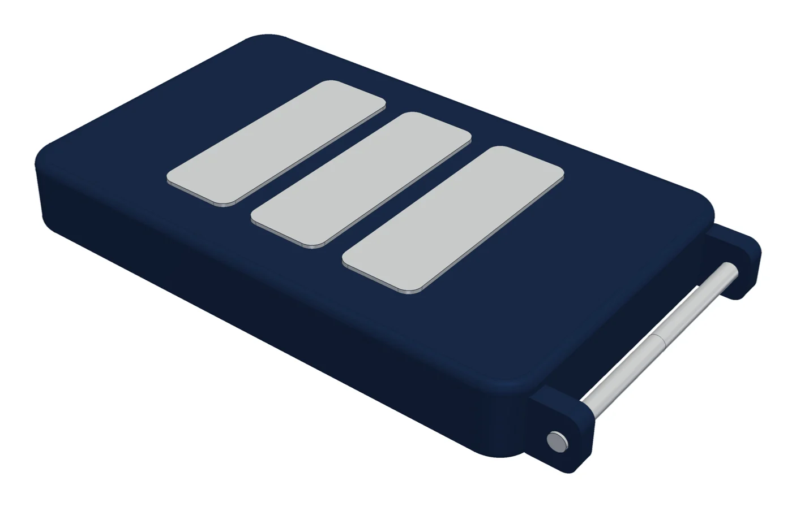
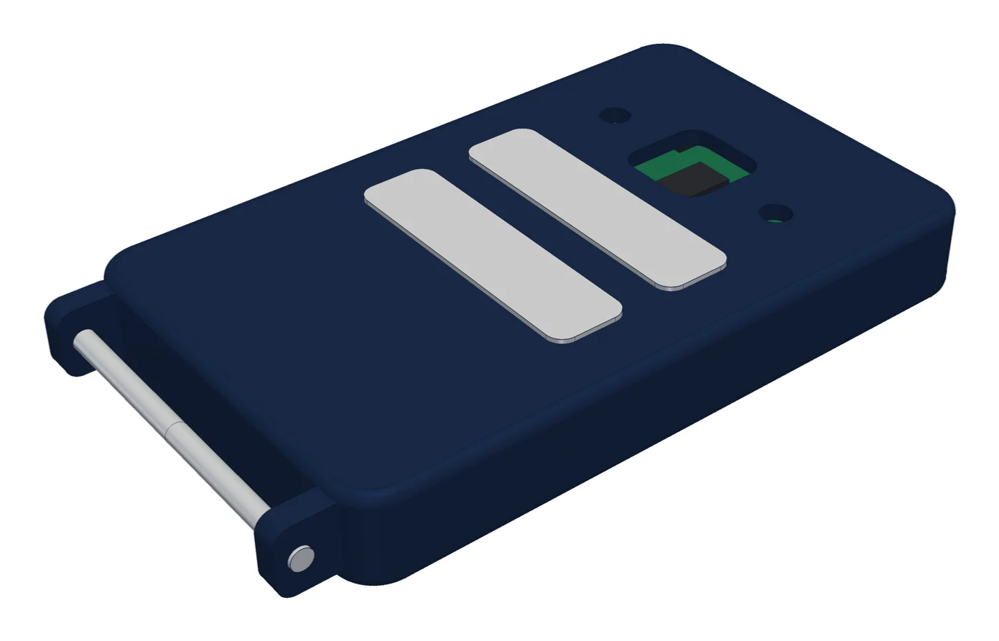
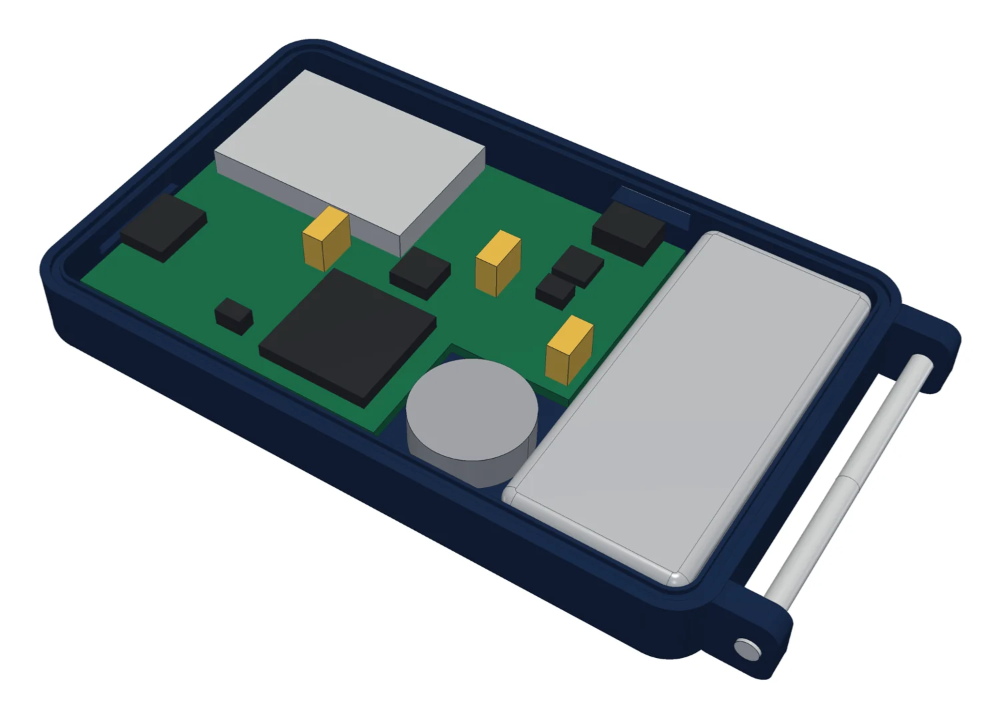
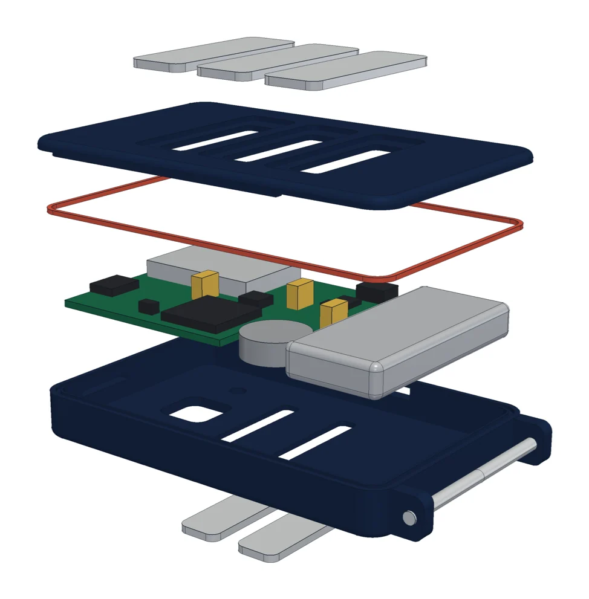
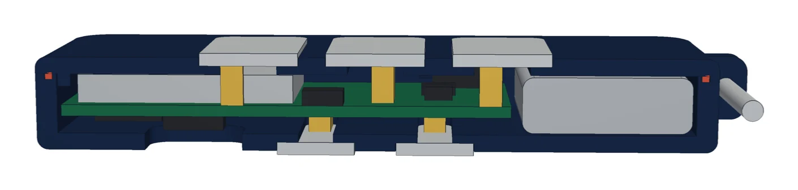
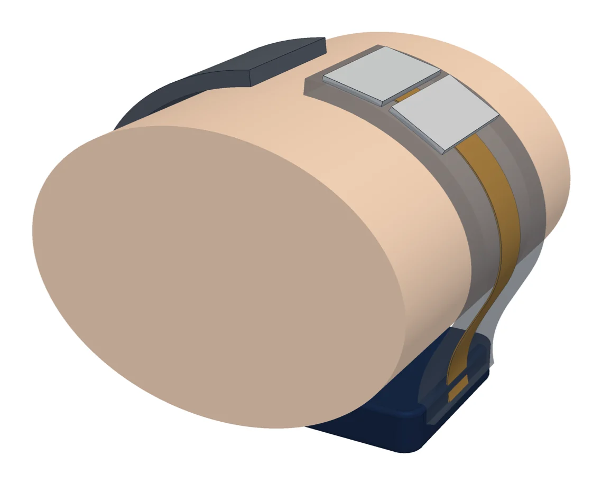

המודל המוצק הראשון מוכן, עם קובצי STEP ושש תמונות. אפס התנגשויות. לוח ה-ADS1298 של TI נבדק מול המדריך שלו: אפשר לחווט אותו ישירות ל-XIAO עם 5V, 3.3V ואדמה בלבד.
CYPHIX Band α · חומרה · עודכן 14.11.2026
תכנית הורדת סיכונים
בודקים כל סיכון בדרך הזולה ביותר, ורק כשהוא עובר משלמים על השלב הבא. חמישה שלבים, מהמחשב ועד יחידה שאפשר לענוד.
עכשיו
שלב 0: סוגרים את התכנון על המחשב
- חישוב הגודל והסוללה מהרכיבים עצמם: גרסה ראשונה מוכנה, למטה.
- מודל תלת-ממד מוצק ראשון של המודול: מוכן, למטה. הכול נכנס, בלי התנגשויות.
- לוח ה-ADS1298 של TI: נבדק מול מדריך הלוח, ואפשר לחווט אותו ישירות ל-XIAO.
- קושחה לשלב 2: בעבודה.
- הוראות לניסוי שלב 1: מוכנות, למטה.
הגודל שיצא מהחישוב
שטח הלוח חושב מרשימת הרכיבים, הסוללה מצריכת הזרם, והעובי מהערימה של מה שיושב זה על זה.
48.5 × 30 × 7.3 מ״מ
המודול, עם לוח ראשון מרווח
41.8 × 30 × 7.3 מ״מ
אחרי צמצום הלוח
100 mAh
כשבועיים במרפאה, 60 הקלטות ביום
כ-30 גרם
עם הרצועה. המותר במפרט: 40
| מקור | אורך × רוחב × עובי, מ״מ | מה זה |
|---|---|---|
| ההדמיה | 35 × 26 × 6 | לא חושב מהרכיבים |
| המפרט | 45 × 30 × 12 | לא חושב מהרכיבים |
| החישוב, סוללה לצד הלוח | 48.5 × 30 × 7.3 | ההמלצה: דק |
| החישוב, סוללה מעל הלוח | 36 × 28 × 11.6 | קצר אבל עבה |
יצא שטח קרוב למפרט ועובי קרוב להדמיה. הקלטה של 10 שניות צורכת מעט מאוד, ולכן מספיקה סוללה של 100 mAh במקום 150–300 שבמפרט, וזה מה שמאפשר מודול דק. המספרים יתעדכנו כשכל מידה תאומת מול דף היצרן.
המודל המוצק הראשון
זה מודל התאמה, בנוי סביב הרכיבים בגודלם האמיתי, ונועד לענות על שאלה אחת: האם הכול נכנס, ואיפה כל דבר יושב. זה עוד לא העיצוב הסופי.






מה המודל מראה
- הכול נכנס. הלוח, הסוללה, מנוע הרטט וכל הרכיבים הגבוהים יושבים בחלל בלי אף התנגשות. הבדיקה רצה אוטומטית בכל שינוי.
- כל משטח מתכת מודבק על מדף במארז, ומגע קפיץ מהלוח נוגע בגב שלו דרך חלון. כך המשטח לא גוזל גובה מהחלל, ויש שטח הדבקה רחב לאטימה.
- המוליך ל-RA1 ול-RA2 יוצא מקצה המודול ורץ בתוך הרצועה עד למעלה. הצד הזה של הרצועה קבוע למודול, כדי שהמוליך לא יעבור דרך ציר זז. הצד השני נשאר עם פין שחרור מהיר.
- ממצא שדורש החלטה: מודול של 48.5 מ״מ ארוך ושטוח מול עקמומיות היד. מול חתך יד של 59 × 42 מ״מ נשאר בקצוות מרווח של עד 9 מ״מ. המשטחים של LA יושבים במרכז ולכן נוגעים, אבל לנוחות צריך תחתית מעוקלת או את הגרסה הקצרה.
מה עוד לא במודל: סגר הרצועה, ברגים, משטחים מעוצבים, ושיפועים לתבנית.
השלבים
כל שלב עונה על שאלה אחת. אם התשובה לא טובה, מתקנים לפני שממשיכים, והכסף של השלב הבא לא יצא.
0
על המחשב
בלי עלותבעבודה
- השאלה
- האם התכנון סגור: הגודל מחושב, הסכמה מלאה, הרכיבים זמינים, והכול נכנס במארז?
- איך
- חישוב גודל וסוללה, מודל CAD מוצק, סכמה ורשימת רכיבים, סימולציה של הכניסות.
- עובר אם
- אין שגיאות בבדיקת החוקים, כל רכיב ניתן לקנייה, ואין התנגשויות במודל.
- מי
- אני.
1
אלקטרודות יבשות על האב-טיפוס הקיים
כמעט בלי עלותהבא בתור
- השאלה
- האם משטחי מתכת יבשים בגודל המתוכנן נותנים אק״ג קריא? זה הסיכון הגדול ביותר, ואפשר לבדוק אותו כבר היום.
- איך
- מחליפים את מדבקות הג׳ל במשטחי נירוסטה ומקליטים עם האפליקציה הקיימת.
- עובר אם
- רואים פעימה ברורה בכל ליד, והרעש בין הפעימות קטן לפחות פי 10 מגובה הפעימה.
- מי
- אתה מחבר ומקליט לפי הוראות שאכתוב. אני מנתח את ההקלטות.
2
השבב החדש על השולחן
כמעט בלי עלותבבדיקה: חיווט ישיר של הלוח שכבר יש לך
- השאלה
- האם משפחת ה-ADS1294 וארבעת הערוצים עובדים עם האלקטרודות היבשות, והאפליקציה מציגה את האות?
- איך
- לוח השבב של TI שכבר קנית (ADS1298, אותה משפחה ואותה קושחה), בלי לוח האם שלו ובלי התוכנה של TI. מחווטים אותו ישירות ל-XIAO nRF52840 שלך. הקושחה משדרת בפורמט הקיים, כך שהאפליקציה לא משתנה.
- עובר אם
- הקלטה של 10 שניות מגיעה לאפליקציה מארבעה ערוצים, בלי דגימות חסרות.
- מי
- אני מכין את טבלת החיווט וכותב קושחה. אתה מחווט ומקליט.
3
יחידה לבישה ראשונה
800–1,500 דולר ל-5 יחידותממתין
- השאלה
- האם הלוח הממוזער, המארז, הרצועה והמוליך שבתוכה עובדים יחד על היד?
- איך
- לוחות מורכבים מהמפעל, מארז מודפס, מעגל גמיש ורצועה יצוקה.
- עובר אם
- 10 הקלטות מלאות מתוך 10 על היד, הסוללה מחזיקה כמתוכנן, והמוליך שורד בדיקת כיפוף.
- מי
- אני מכין את קובצי הייצור. אתה מזמין, מרכיב ובודק. מהנדס אלקטרוניקה מבקר את הלוח לפני ההזמנה.
4
סבב תיקונים ובטיחות
800–1,500 דולר, ועוד מעבדהממתין
- השאלה
- האם היחידה בטוחה ויציבה מספיק לניסוי בבית חולים?
- איך
- סבב שני עם התיקונים, מדידת זרם מטופל במעבדה מוסמכת, חומרים עם תיעוד רפואי, בדיקת חיטוי.
- עובר אם
- המעבדה מאשרת את מדידות הבטיחות, והיחידה עומדת בניגוב חוזר באלכוהול.
- מי
- מעבדה מוסמכת והגורם המלווה בבית החולים. אני מכין את התיעוד.
הסיכונים
מסודרים לפי חומרה. לכל סיכון יש בדיקה זולה, והשלב שבו היא נעשית.
הסיכוןאיך בודקים בזולשלב
אלקטרודות יבשות לא נותנות אות נקיבלי אות אין מוצר.
משטחי נירוסטה על האב-טיפוס שכבר עובד, ואחר כך על לוח הניסוי.
1, 2
האלקטרוניקה והסוללה לא נכנסות במודול נוחהגדלים בהדמיה ובמפרט לא חושבו מהרכיבים.
חישוב מהרכיבים האמיתיים, מודל CAD מוצק, ואחריו הדפסה למדידה על היד.
0, 3
השבב החדש ותוכנית ארבעת הערוציםשבב אחר מזה שבאב-טיפוס, וקושחה חדשה.
לוח השבב של TI שכבר אצלך, מחווט ל-XIAO, לפני שמתכננים לוח משלנו.
2
האפליקציה לא מקבלת את האות החדשהאפליקציות נעולות היום על 320 דגימות בשנייה.
מצב תאימות בקושחה: המכשיר החדש משדר בפורמט הקיים. את האפליקציה מעדכנים רק אחרי שהחומרה מוכחת, ובאישורך.
2
המוליך ברצועה נשבר או מתנתקRA1 ו-RA2 יושבות על הרצועה, מעבר לציר.
דגימת מעגל גמיש בבדיקת כיפוף, ויציקת ניסיון בסיליקון.
3
רעש או קליטה חלשה בלוח הממוזעראות של מיקרו-וולטים ליד אנטנה.
הולכים לפי לוח הייחוס של TI, ומהנדס אלקטרוניקה מבקר לפני כל הזמנה.
2, 3
רכיב חסר במלאי, או שהמפעל לא מרכיב אותועיכוב של חודשים.
בדיקת זמינות לכל רכיב לפני שמקבעים את הסכמה, וחלופה לכל רכיב קריטי.
0
זיעה מקצרת בין אלקטרודות, או שהאטימה נכשלתהאות נעלם בשימוש אמיתי.
מרווח מבודד ואטם כבר ב-CAD, ובדיקת טפטוף על יחידה מודפסת.
0, 3
בטיחות המטופל ותקינהתנאי לניסוי בבית חולים.
מתכננים לפי IEC 60601-1 מהיום הראשון: זרם מטופל מוגבל, אין הקלטה בזמן טעינה. מודדים במעבדה.
0, 4
טעות שלי בתכנוןאני לא מודד ולא מלחים.
כל שלב נבדק במדידה אמיתית לפני הבא, ואדם מבקר כל לוח לפני הזמנה.
בכולם
חלקי העבודה
שמונה חלקים שמתקדמים במקביל. ליד כל אחד כתוב מה קורה בו עכשיו.
מערכת
מה המכשיר צריך לעשות, ומה יוצא מזה: גודל, סוללה וזמן פעולה.
בעבודה: חישוב גודל וסוללה
אלקטרודות
צורה, שטח, חומר, והחיבור של כל משטח ללוח.
בעבודה: הוראות לניסוי שלב 1
אלקטרוניקה
סכמה, רשימת רכיבים, לוח ניסוי, ואחריו הלוח הממוזער.
בעבודה: בחירת רכיבים וסכמה
קושחה
התוכנה שרצה על המכשיר: דגימה מהשבב ושידור ב-BLE.
מתחיל עם לוח הניסוי
אפליקציה
ארבעה ערוצים ו-500 דגימות בשנייה.
רק אחרי שלב 2, ובאישורך
עיצוב תעשייתי ומכני
המודול, הרצועה, ומה שעובר בתוך הרצועה, כקבצים לייצור.
בעבודה: מודל מוצק ראשון
ייצור ורכש
קובצי ייצור, הזמנות והרכבה.
מתחיל בשלב 2
בטיחות ותקינה
זרם מטופל, חומרים במגע עם העור, תיעוד לניסוי.
בעבודה: מגבלות הזרם נכנסות לסכמה
מה אני צריך ממך
- ניסוי שלב 1. להחליף את מדבקות הג׳ל במשטחי נירוסטה ולהקליט. ההוראות המלאות כאן למטה.
- לוח ה-ADS1298 של TI. למצוא אותו ואת ה-XIAO. טבלת החיווט תגיע כשהבירור מול מדריך הלוח יסתיים.
- שום קנייה כרגע. לפני כל קנייה אציג מה קונים, כמה זה עולה ולמה.
הוראות לניסוי שלב 1
בטיחות: האב-טיפוס מחובר ב-USB רק למחשב נייד שמנותק מהמטען, או לסוללת גיבוי. אף פעם לא למשהו שמחובר לשקע בזמן שהאלקטרודות על הגוף.
מה צריך
- האב-טיפוס עם חמשת החוטים: RA, LA, LL#1, LL#2, RLD.
- שבע חתיכות נירוסטה. לסבב ראשון מספיק מה שיש בבית: דסקיות נירוסטה M8, ידיות של כפיות, או פס נירוסטה גזור.
- קליפס תנין או הלחמה, לחבר כל חתיכה לחוט שלה.
- מדבקות הג׳ל הרגילות, להשוואה. קרטון קשיח וסרט הדבקה.
הגדלים שבודקים
| משטח | הגודל במוצר | תחליף ביתי |
|---|---|---|
| LL1, LL2, RLD | 7 × 21 מ״מ כל אחד, על הרגל | דסקית M8 |
| LA | שני משטחים של 5.5 × 21 מ״מ על חוט אחד, על שורש כף היד | שתי דסקיות M6 על חוט אחד |
| RA | 9.4 × 19 מ״מ, לאצבעות יד ימין | דסקית M8 |
את שלושת משטחי הרגל מדביקים בשורה על קרטון, במרווח של 2 מ״מ, בסדר LL1, RLD, LL2. זה הסידור שבמוצר.
איך מניחים
- שורש כף יד שמאל: משטחי ה-LA על הצד הפנימי, מוחזקים ברצועת הסקוטש.
- רגל שמאל, על עור חשוף מעל הברך: הקרטון עם שלושת המשטחים. שורש כף היד נח על הקרטון ולוחץ אותו לרגל.
- יד ימין: שתי אצבעות על משטח ה-RA.
- מקליטים 10 שניות באפליקציה, בישיבה, בלי לדבר.
סדר ההקלטות
שלוש הקלטות בכל מצב. בין מצב למצב רושמים שעה, מצב, ומה הרגשת: לחץ חזק או חלש, זיעה.
| מצב | מה עושים | למה |
|---|---|---|
| A | מדבקות ג׳ל, כמו היום | קו הבסיס להשוואה |
| B | משטחים יבשים, עור יבש | המצב האמיתי |
| C | אותו דבר, אחרי ניגוב העור במטלית לחה | המקרה הטוב |
| D | חצי מכל משטח מכוסה בסרט בידוד | כמה הגודל משפיע |
| E | כמו B, עם חוט ה-RLD מנותק | האם ה-RLD באמת נחוץ |
מה התוצאה קובעת
- עובר במצב B: ממשיכים עם משטחים בגודל הזה, בלי מגבר ליד כל אלקטרודה.
- עובר רק במצב C: צריך משטחים גדולים יותר או חומר אחר, והמודול גדל.
- נכשל גם ב-C: מוסיפים מגבר ליד כל אלקטרודה, שיש לו מקום בלוח, ובודקים שוב.
יומן
חישוב הגודל הראשון מוכן: 48.5 × 30 × 7.3 מ״מ עם סוללה של 100 mAh לצד הלוח. KiCad מותקן. הוראות ניסוי שלב 1 כתובות.
ערכת ה-ADS1298 של TI כבר אצלך, אז שלב 2 לא דורש קנייה. במקום לוח האם והתוכנה של TI, מחווטים את לוח השבב ישירות ל-XIAO. טבלת החיווט בבדיקה מול מדריך הלוח.
התכנית נכתבה. הכלים בהתקנה, ושני בירורים רצים: מידות וצריכת זרם של כל רכיב מול דפי היצרן, והאם ערכת הבדיקה של TI מתאימה לשלב 2.
המספרים בדף הם הערכות, והם מתעדכנים כשרשימת הרכיבים נסגרת.